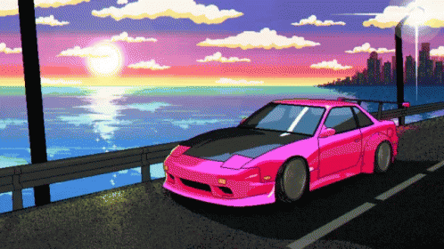

"Initial D" is a 90's animated story about a Japanese high school boy who finds his passion for driving after being involved in street races. It was originally written as a manga book series, but was later adapted into TV-show form. He was initially uninterested in cars, however he helped his father delivering tofu to their family owned business, driving down the mountain with insane skill later noticed by his friends and other racers in the area. He was often challenged by other skilled drivers, believing they could best him in the asphalt fight. This led to his involvement in the car culture which catapulted him into national fame.
